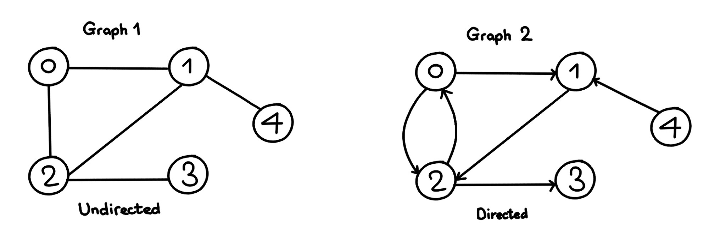

All Topics
Trees and Graphs
Trees:-
We read the linear data structures like an array, linked list, stack and queue in which all the elements are arranged in a sequential manner.
The different data structures are used for different kinds of data.
A tree is also one of the data structures that represent hierarchical data.
Suppose we want to show the employees and their positions in the hierarchical form

Its structure is similar to the real tree, so it is named a Tree.
In this structure, the root is at the top, and its branches are moving in a downward direction.
Therefore, we can say that the Tree data structure is an efficient way of storing the data in a hierarchical way.
Let's understand some key points of the Tree data structure.
A tree data structure is defined as a collection of objects or entities known as nodes that are linked together to represent or simulate hierarchy.
A tree data structure is a non-linear data structure because it does not store in a sequential manner. It is a hierarchical structure as elements in a Tree are arranged in multiple levels.
In the Tree data structure, the topmost node is known as a root node. Each node contains some data, and data can be of any type. In the above tree structure, the node contains the name of the employee, so the type of data would be a string.
Each node contains some data and the link or reference of other nodes that can be called children.
Some basic terms used in Tree data structure.
Root: The root node is the topmost node in the tree hierarchy. In other words, the root node is the one that doesn't have any parent. In the above structure, node numbered 1 is the root node of the tree. If a node is directly linked to some other node, it would be called a parent-child relationship.
Child node: If the node is a descendant of any node, then the node is known as a child node.
Parent: If the node contains any sub-node, then that node is said to be the parent of that sub-node.
Sibling: The nodes that have the same parent are known as siblings.
Leaf Node:- The node of the tree, which doesn't have any child node, is called a leaf node. A leaf node is the bottom-most node of the tree. There can be any number of leaf nodes present in a general tree. Leaf nodes can also be called external nodes.
Internal nodes: A node has atleast one child node known as an internal
Ancestor node:- An ancestor of a node is any predecessor node on a path from the root to that node. The root node doesn't have any ancestors. In the tree shown in the above image, nodes 1, 2, and 5 are the ancestors of node 10.
Descendant: The immediate successor of the given node is known as a descendant of a node. In the above figure, 10 is the descendant of node 5.
Implementation:-
The tree data structure can be created by creating the nodes dynamically with the help of the pointers.
There are many types of trees:-
General Trees
Binary Trees
Binary Search Trees
AVL Tree
Red Black Tree
Graphs:-
A graph can be defined as group of vertices and edges that are used to connect these vertices.
A graph can be seen as a cyclic tree, where the vertices (Nodes) maintain any complex relationship among them instead of having parent child relationship.
A graph can be directed or undirected.
However, in an undirected graph, edges are not associated with the directions with them.
An undirected graph is shown in the above figure since its edges are not attached with any of the directions.
If an edge exists between vertex A and B then the vertices can be traversed from B to A as well as A to B.
In a directed graph, edges form an ordered pair.
Edges represent a specific path from some vertex A to another vertex B.
Node A is called initial node while node B is called terminal node.

Graph Terminology
Path
A path can be defined as the sequence of nodes that are followed in order to reach some terminal node V from the initial node U.
Closed Path
A path will be called as closed path if the initial node is same as terminal node. A path will be closed path if V0=VN.
Simple Path
If all the nodes of the graph are distinct with an exception V0=VN, then such path P is called as closed simple path
Cycle
A cycle can be defined as the path which has no repeated edges or vertices except the first and last vertices.
Connected Graph
A connected graph is the one in which some path exists between every two vertices (u, v) in V. There are no isolated nodes in connected graph.
Complete Graph
A complete graph is the one in which every node is connected with all other nodes. A complete graph contain n(n-1)/2 edges where n is the number of nodes in the graph.
Weighted Graph
In a weighted graph, each edge is assigned with some data such as length or weight. The weight of an edge e can be given as w(e) which must be a positive (+) value indicating the cost of traversing the edge.
Digraph
A digraph is a directed graph in which each edge of the graph is associated with some direction and the traversing can be done only in the specified direction.
Loop
An edge that is associated with the similar end points can be called as Loop.
Adjacent Nodes
If two nodes u and v are connected via an edge e, then the nodes u and v are called as neighbours or adjacent nodes.
Degree of the Node
A degree of a node is the number of edges that are connected with that node. A node with degree 0 is called as isolated node.
In sequential representation, we use adjacency matrix to store the mapping represented by vertices and edges.
In adjacency matrix, the rows and columns are represented by the graph vertices.
A graph having n vertices, will have a dimension n x n.
An entry Mij in the adjacency matrix representation of an undirected graph G will be 1 if there exists an edge between Vi and Vj.
Representation of weighted directed graph is different.
Instead of filling the entry by 1, the Non- zero entries of the adjacency matrix are represented by the weight of respective edges.
In the linked representation, an adjacency list is used to store the Graph into the computer's memory.
An adjacency list is maintained for each node present in the graph which stores the node value and a pointer to the next adjacent node to the respective node.
If all the adjacent nodes are traversed then store the NULL in the pointer field of last node of the list.
The sum of the lengths of adjacency lists is equal to the twice of the number of edges present in an undirected graph.
In a directed graph, the sum of lengths of all the adjacency lists is equal to the number of edges present in the graph.
In the case of weighted directed graph, each node contains an extra field that is called the weight of the node.